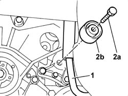
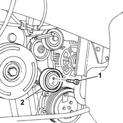
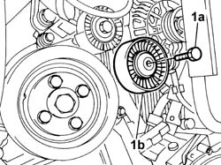

1092G21 ENGINE COMPONENT SINGLE BELT FIXED TENSIONER - R RWITH BELT REMOVED
- Path
- Procedures > 10 ENGINE > 1092 ENGINE COMPONENT MISCELLANEOUS DRIVES > 1092G SINGLE DRIVE BELT FOR VARIOUS ENGINE COMPONENTS > 1092G21 ENGINE COMPONENT SINGLE BELT FIXED TENSIONER - R RWITH BELT REMOVED
- Kind
- repair procedure (removal / refitting; the operation number is the code)
- Applies to
- all engines; all production periods
- Interactive page
- https://sloeber94.github.io/elrnDB-fUlss/en/#/179007212
Applies to: engines: 3.0 24V V6; all production periods
 Removing
Removing
 Refitting
Refitting1. Move the power steering circuit pipe.
2. Undo the fixing bolt (2a) and remove the auxiliary drivebelt moving tensioner (2b).

Applies to: engines: 3.0 24V V6; all production periods
Refitting
Removing- Position the tensioner roller and tighten the fixing bolt to the recommended torque.
 | Value - daNm | Fastening | Component | Ø |
|---|---|---|---|---|
. | 2.5 | Bolt | ENGINE COMPONENT BELT TENSIONER - R.R. | - |
- Position the power steering circuit pipe.
Applies to: engines: 2.2 16V JTD; all production periods
Removing
Refitting1. Undo the retaining bolt.
2. Remove the fixed tensioner.

Applies to: engines: 2.2 16V JTD; all production periods
Refitting
RemovingFit the single components belt fixed tensioner and secure it tightening the bolt to torque.
Applies to: engines: 2.0 16V JTD; all production periods
Removing
Refitting1. Undo the retaining bolt.
2. Remove the fixed tensioner.
Applies to: engines: 2.0 16V JTD; all production periods
Refitting
RemovingFit the single components belt fixed tensioner and secure it tightening the bolt to torque.
Applies to: engines: 2.0 16v; all production periods
Removing
Refitting1. Undo the fixing bolt (1a) and remove the fixed tensioner (1b).

Applies to: engines: 2.0 16v; all production periods
Refitting
Removing- Place the fixed tensioner in position and tighten the fixing bolt.